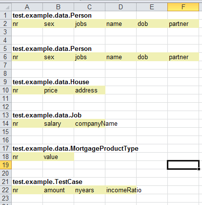
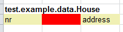
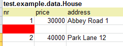
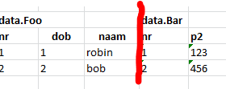
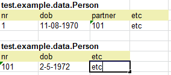
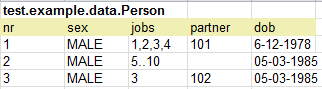
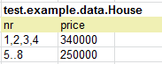
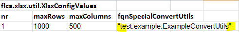
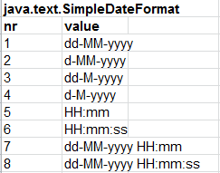

Welcome to junit-xlsdata-loader documentation
Index How to fill the Excel file API XlsxConfig
How to fill the Excel file
One can create an Excel file (2007 .xlsx format) from scratch, but obviously it is much more convenient to use this utility to create an empty template, and start from there:
For example:
XlsDataWriter.writeXlsFile("example.xlsx",
Person.class, Person.class, House.class, Job.class,
MortgageProductType.class, TestCase.class);
XlsDataWriter.writeXlsFile("example.xls", “config.xlsx”,
Person.class, Person.class, House.class, Job.class,
MortgageProductType.class, TestCase.class);
XlsDataWriter.writeXlsFile("example.xls", aliases, //=List of XlsxAlias
Person.class, Person.class, House.class, Job.class,
MortgageProductType.class, TestCase.class);
Besides generating an excel template file to populate your test classes, XlsxDataWrites also has a feature to generate an excel template file that can be used
as a starting point for aliasses to otherwise long property names, see:
XlsxDataWriter.writeAliasXlsxFile(FILENAME5, (short) 10, Foo.class, Bar.class);
The use of such a file is also explained under XlsxConfig.
Coming back to our first method:
XlsDataWriter.writeXlsFile("example.xlsx",
Person.class, Person.class, House.class, Job.class,
MortgageProductType.class, TestCase.class);
This method accepts the output filename, and a number of classes that will be generated. The same class may appear more than once, to indicate that this object
server another purpose.
For example the customer is a Person class, and this customer has a partner property that is also a Person class.
The command above generates the following excel file:

You can rearrange this worksheet any way you want (you may even move blocks to another worksheet), as long as you obey some basis rules that define a class that can be populated:
- A particular cell contains a fully qualified class-name. (ex: cell 9:1 = test.example.data.House)
- Right below the cell above is a cell with the header: 'nr'. This acts as the (xlsx) primary key to refer to a particular row with property values.
- Next to this 'nr' cell are the property names of this class. It does not matter if this class also has a propery
-
The value under (the first) 'nr' header, must be filled with an int or list of int's. This nr must be unique for this cell within this sheet. The following values are all accepted:
101 # you don't have to start with 0 or 1
1,2,3,4 # all property values for key 1,2,3 and 4 will be same
1..4 # is equivalent to list above (hence 1 and 4 inclusive!) - There should be no empty cell under 'nr' , becaise the first empty cell indicates the total number op record for the class.
 address must be moved to the left.
 Row between nr 1 and 2 should be removed.

There should be an empty row or column between blocks.
All values are considered String and mappers will try to convert this value to the corresponding property type. You have to surround a string with ampersands. An empty cell is considered a null value.
All numeric values should use the dot as the decimal delimiter. By default the following date formats can be used:
dd-MM-yyyy, d-MM-yyyy, dd-M-yyyy, d-M-yyyy, HH:mm, HH:mm:ss, dd-MM-yyyy HH:mm, dd-MM-yyyy, HH:mm:ss
You can override these with your own set of date formats.
Note
Be aware that while working inside an Excel file the editor tries to be clever and automatically changes the cell format, this may lead to a different format than the supported one.
It is best to select all cells, right-click and cell format to text.
All property values (except primitives), can refer to other object(s). For a 1:1 relation the value should be the nr of the corresponding type. Example:

in this example Person (nr=1) has a partner (also a Person.class) with nr=101.
Note that in the second Person block the partner is omitted, because otherwise we would end-up in a recusive loop!
For collections a comma separated list of nr's can be used, or a range indicated with a '..'
This can be used in properties and nr's. :


Note:
When referring to another object, the program will first look in the same worksheet, for a corresponding instance. If it can not be found there,
it will scan all other worksheets (starting from the first) to retrieve this corresponding instance. If it still can not be found an exception will be raised.
String values can be entered without surrounding quotes, in fact you get a warning if you use quotes. There are however two exceptions on this rule:
- To indicate an empty string you should use: “”
- To indicate a fully qualified classname as the value of a property, you also need surrounding quotes:

To enter Date(Time) values, out-off-the-box, the following formats are available:

You may provide your own formats, this will be explained under XlsxConfig.
API
The three most important classes (and maybe the only ones you will use) are:- XlsxDataWriter
- Xlsx
- XlsxConfig
XlsxDataWriter
The first one has one static method, that can be used initially to create an empty excel template, that you can use as a starting point. For example:XlsDataWriter.writeXlsFile("example.xlsx",
Person.class, Person.class, House.class, Job.class,
MortgageProductType.class, TestCase.class);
Note: There are two other variations on this method:
XlsDataWriter.writeXlsFile("example.xls", “config.xlsx”,
Person.class, Person.class, House.class, Job.class,
MortgageProductType.class, TestCase.class);
and:
XlsDataWriter.writeXlsFile("example.xls", aliases, //=List
Person.class, Person.class, House.class, Job.class,
MortgageProductType.class, TestCase.class);
With the latter two methods, (long) property names can replaces with (short) alias names, making the generated excel more readable. The aliases can be provided explicitly like in the last example, or via an existing excel file like 'config.xlsx' in the second example. This excel file is explained in detail under XlsxConfig at page 7
Xlsx
The Xlsx class is the actual workhorse. It has two constructors. The first one has one parameter: the name of the excel file. This can be an absolute path (ex “/tmp/example.xlsx”) or file on the classpath.Xlsx xls = new Xlsx(“/example.xlsx”);
The other has a second parameter: the name of an excel file that contains the XlsxConfig settings, for example (because most likely only the aliases will very), a typical pattern is the following:
@BeforeClass
public static void setup() {
XlsxConfg.readFromXlsx(“/config.xlsx”);
}
:
Xlsx xls = new Xlsx(“/example.xlsx”, “/aliasses.xlsx”);
The writeXlsxFile() method will generate an initial excel file with only one worksheet. You can create up to 255 (a byte) extra sheets. To retrieve the total number of sheets:
byte nSheets = xlsx.shoutCount();
As we have seen before, all blocks inside a sheet have a (primary) column labeled 'nr'. To obtain all the nr's that belong to particular class in a particular worksheet do: To find if a particular class exists use:
Setif (xlsx.contains(Person.class, sheetnr)) { ...
Note that if you have more than one class of the same type (ex customer of type Person with a partner of type Person), you will get the nr's of both the customer and partner! Hence if you need the customer in one of your tests, the following is not correct:
Setfor (int nr : nrs) {
Person customer = (Person) xlsx(Person.class, sheet, nr);
doTest(customer);
}
because you will also run your test with the partner! To solve this issue you have two options:
-
create an extra test class just for this purpose, that contains a property Person person, and refer to customers only, and use this test class like:
Setfor (int nr : nrs) { Testclass testclass = (Testclass) xlsx(Testclass.class, sheet, nr); doTest(testclass.getPerson()); } -
Make sure that the nr's for the partner can be recognized and use that, for example:
for (int nr : nrs) { if (nr < 100) { Person customer = (Person) xlsx(Person.class, sheet, nr); doTest(customer); } }
XlsxConfig
The Xlsx and XlsxDataWriter class make use of several setting that are maintained in the static class XlsxConfig. These sessing can be maintained explicitly via an API or implicitly via an excel file that contain all settings. The following settings are available:-
maxRows
A value indicating how many rows should be scanned (default 1000) -
maxCols
A value indicating how columns should be scanned (default 500)
List of SimpleDateFormats -
List of XlsxAlias objects
Via a XlsxAlias objects it is possible to replace (long) property names by short alias names. Default an empty list. -
ConvertUtils
This is an interface to you own special class that implement ConvertUtils. This converter can then convert a String value to you own objects. Default EmptyConvertUtils.
ExampleConvertUtils.java can be used as a starting point see:
https://github.com/robinbakkerus/junit-xslx-loader6/blob/master/src/test/java/test/example/ExampleConvertUtils.java
See figure on page 4.
XlsxConfig.maxCols = 1000;
XlsxConfig.maxRows = 5000;
List dateformats = new ArrayList<>();
dateformats.add(new SimpleDateFormat("yyyy/MM/dd"));
XlsxConfig.setDateFormats(dateformats);
List aliasses = new ArrayList<>();
aliasses.add(new XlsxAlias("*", "veryLongPropertyName", "vlpn"));
XlsxConfig.setAliases(aliasses);
XlsxConfig.setSpecialConvertUtils(new ExampleConvertUtils());
Another way to override the default settings, is to provide your own excel file with all these settings and use that one implicitly, like this:
Xlsx xlsx = new Xlsx(“/example.xlsx”, “/config.xlsx”)
the corresponding excel file is here: excel file
and the corresponding config excel is here: config excel file